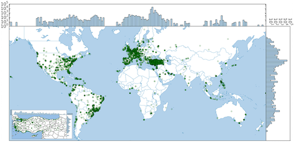

Recent Research Projects
Botometer
To detect social bots we build a machine learning system that extracts more
than a thousand features in six different classes: users and friends meta-data,
tweet content and sentiment, network patterns, and activity time series. As a demonstration of our work on the detection of social bots, we built a service called Botometer (aka BotOrNot) that evaluates the bot-likelihood of Twitter accounts. I am also maintaining the bot-repository to provide public datasets and tools that help identification of social bots, since deception and detection technologies are in an arms race.
DESPIC
Project name stands for "Detecting Early Signature of Persuasion in Information Cascades" and aims to design a system detect persuasion campaigns at their early stage of inception, in the context of online social media.
I have been working on several modules of this framework: (i) a clustering procedure that uses metadata to compute similarity between memes; (ii) a classification system that determines whether a meme is potentially an orchestrated campaign or a genuine, grassroots conversation; (iii) an anomaly detection system that tracks statistical patterns based on time, location, and user features to identify memes and tweets that needs additional inspection.
I have been working on several modules of this framework: (i) a clustering procedure that uses metadata to compute similarity between memes; (ii) a classification system that determines whether a meme is potentially an orchestrated campaign or a genuine, grassroots conversation; (iii) an anomaly detection system that tracks statistical patterns based on time, location, and user features to identify memes and tweets that needs additional inspection.
Social Protests

I analyzed the behavioral changes of users during social
protests in Turkey. Our analysis first characterizes spatio-temporal nature of the
conversation about Gezi park demonstrations, showing that similarity in trends
of discussions mirrors geographic cues. More importantly, we describe the characteristics of the users involved in this conversation and what roles they played.
We study how roles and individual influence evolved during the period of the upheaval. This analysis reveals that the conversation becomes more democratic as events unfold, with a redistribution of influence over time in the user population.
We conclude by observing how the online and offine worlds are tightly intertwined,
showing that exogenous events, such as political speeches or police actions, affect
social media conversations and trigger changes in individual behavior. This work received the best paper award at the Web Science conference in 2014
Dream Analysis
In addition to my main research topics, I am interested in psychology and cognitive science. Specifically, I am curious about dreams and the unconscious mind. My excitement about dreams led to a leisure-time research project in which I analyzed dream interpretations to investigate cultural differences and universal archetypes.
In this study, I introduce multiplex network of dream interpretations for English, Chinese and Arabic languages that represent different cultures from various parts of the world. We analyze communities in these networks, finding that symbols within a community are semantically related. The central nodes in communities give insight about cultures and symbols in dreams. Differences between network highlight interesting cultural patterns. For instance, we observed the dream symbol "woman" in Chinese network is one of the most central node of the network community consist of symbols with negative emotions and nightmares, cultural roots of which is explained by Jung in 1960s.
Explore dream network for English here
In this study, I introduce multiplex network of dream interpretations for English, Chinese and Arabic languages that represent different cultures from various parts of the world. We analyze communities in these networks, finding that symbols within a community are semantically related. The central nodes in communities give insight about cultures and symbols in dreams. Differences between network highlight interesting cultural patterns. For instance, we observed the dream symbol "woman" in Chinese network is one of the most central node of the network community consist of symbols with negative emotions and nightmares, cultural roots of which is explained by Jung in 1960s.
Explore dream network for English here
Previous Projects & Research
Modal analysis of Myosin II and Identification of Functionally Important Sites (M.Sc. Thesis 2012)
Analysis of protein dynamics uses structural and fluctuation based methods. Fluctuation analysis of protein dynamics has proven to be a rewarding venue of research. Massand spring models are used in previous research commonly. However, fluctuations of this models are based on purely harmonic which has significant gap between the experimental results. Deviations from harmonicity mostly observe in slow, collective modes. Corrections like anharmonic modal decomposition are first step in order to minimize this gap. The contribution of the higher-order corrections is limited because of the interacting modes. Mode-coupling corrections which yield valuable information on means of energy transfer and allostery.
In this work, molecular dynamic results of Dictyostelium discoideum myosin II motor domain is used as test ground. Mode fluctuation distributions produced using MD results, fully harmonic models and a model with anharmonic corrections. Tensorial hermite polynomials are used in order to obtain distributions of modal fluctuations. Fluctuations on modal space are transformed back into real space and distribution of residual fluctuations is compared using KL divergence. Analysis results for ligand-bound and free myosin dynamics are used in order to demonstrate that the mode-coupling contributions alone highlight functionally important sites.
In this work, molecular dynamic results of Dictyostelium discoideum myosin II motor domain is used as test ground. Mode fluctuation distributions produced using MD results, fully harmonic models and a model with anharmonic corrections. Tensorial hermite polynomials are used in order to obtain distributions of modal fluctuations. Fluctuations on modal space are transformed back into real space and distribution of residual fluctuations is compared using KL divergence. Analysis results for ligand-bound and free myosin dynamics are used in order to demonstrate that the mode-coupling contributions alone highlight functionally important sites.
Social Network Analysis Using a Statistical Physics Approach (B.Sc. Thesis 2011)
This project is made as an ITU Physics Engineering graduation project under advisory of Prof. Dr. Ayşe Erzan. In this study, the evolution of the message passing network under interaction between nodes is studied. Purpose of these simulations is to obtain some insight
into more complicated systems like social networks. For different initial conditions
and network sizes, the network asymptotically evolves either to a set of disconnected clusters or to one connected component, with all nodes connected to root via directed paths. Thus, network either delivers an initial message to almost all the nodes, or the message is confined to a small subset. Therefore, the problem is essentially a problem of dynamical percolation.
EEG Data Classification and applications (B.Sc Thesis - 2010)
The main purpose of this project is processing EEG signals and classifying them for different cognitive actions. I started this project as a final year project of Electronic Enginnering under advisory of Prof. Müştak Erhan Yalçın.
In this project, feature selection and classification of EEG signals for different cognitive actions is made. There are several methods for classifying them I tried different features and methods. SVM (Support Vector Machines) is one of the method that I used for classification.
In this project, feature selection and classification of EEG signals for different cognitive actions is made. There are several methods for classifying them I tried different features and methods. SVM (Support Vector Machines) is one of the method that I used for classification.